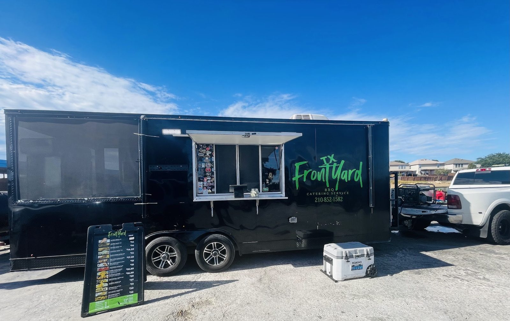

Turkey legs
The headliner. Juicy turkey legs, with a spicy one if you want heat.


BBQ and catering · Marbach Rd, San Antonio
Juicy turkey legs, parmesan wings, mac and cheese with a pepper kick, and crab boil.
What to order first
What keeps going out of the trailer.
The headliner. Juicy turkey legs, with a spicy one if you want heat.
Great sauce, a pepper flavor and noodles with a good bite. Add shrimp or a hot sauce drizzle.

Crab boil worth the price. Shrimp and mac in a bowl is on the board too.


Guest favorites


4.4530 Google reviews
I HIGHLY RECOMMEND, They have different choices of meals to pick from. Great consumer service. We stoppped by today and enjoyed the good juicy turkey legs, I had the spicy one was so Good and I couldn't just leave without trying the Hot buffalo wings "Amazing" Also to top it off with a pineapple Agua Fresca 😋. IF YALL HAVEN'T TRIED IT YALL ARE MESSING OUT. "GO ON BY AND GIVE IT A TRY" ❤️
Super friendly and wanted to try the new menu outside the turkey legs. Tried the parmesan wings with Cucumber lime Agua fesca.... and it was definitely above expectations! Not your plain ol parm wings. Next time I gotta try the BYOB (bringvyoir own bag)
Mac and cheese! Yum. Great sauce... love the pepper flavor. The noodles had a good bite to them. Prices were decent too.I would come back here for a bowl. Thank you guys!

Our story
A black food trailer with a green script logo, on San Antonio's west side. Turkey legs and catering.
Friendly crew, real advice at the window, and food worth a stop on your way through.
Visit
9371 Marbach Rd, San Antonio, TX 78245
Open Tuesday to Sunday, 12 to 9 PM, closed Monday. Call ahead for catering questions.